[N-World Contents] [Book Contents] [Prev] [Next] [Index]
Using The VRAM Editor
With N-Paint's VRAM Editor you can create TIM files for export to the Sony Playstation quickly and easily. You can also manage the distribution of these TIM files within Playstation VRAM to ensure that it is used as efficiently as possible.
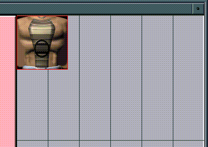
In this Chapter
You'll learn how to:
The VRAM Editor
To use the VRAM Editor:
1. (CLICK-r) on the Paint button in the N-World Config bar.
- The VRAM Editor menu appears:
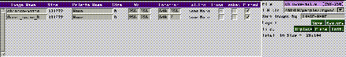
Figure 11.1 The VRAM Editor Menu
2. Open the VRAM Editor Canvas.
- If it is not already open, (CLICK-L) on its icon.
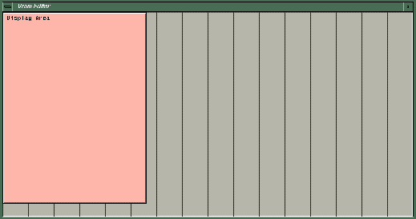
Figure 11.2 The VRAM Editor Canvas
Understanding the VRAM Canvas
The VRAM canvas is a visual representation of the Sony Playstation's VRAM. Elements which use or are stored in VRAM are represented by polygons. The size and proportions of these polygons indicate the amount of VRAM they occupy.
For example, the pinkish rectangle on the left side of the VRAM editor represents the area of VRAM occupied by the Playstation's display buffers. The vertical lines divide the VRAM canvas into 32 cells, called texture pages. Each texture page is 256k x 64k.
How Images are Represented in VRAM
We've already pointed out that the amount of memory an image consumes is represented by the area it occupies in the VRAM canvas. Figure 11.3 shows two different images. The one on the left is 105 x 110 pixels, while the one on the right is 86 x 68 pixels. Each are 8-bit images.
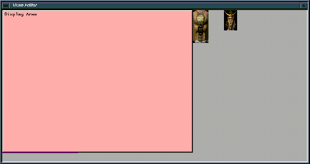
Figure 11.3 Image tiles in the VRAM canvas
Each address in Playstation VRAM can accommodate 16 bits of information. If an image has eight-bit color, then its pixels can be "stacked" in two rows. As a result, a square, 64 x 64 bit image with 8-bit color will be represented as a rectangle in the VRAM editor, because the image is stored in two "rows" in VRAM. Only the top "row" is visible.
So, if a 64 x 64, 8-bit image is color reduced to 4 bits, it will occupy half the amount of VRAM (because 4-bit pixels can be stacked four deep). Figure 11.4 shows the same image loaded into VRAM, but with different bit depths (the image tile on the right is a full-color, 16-bit image, while the one on the left is a 4-bit image). However, the images both have the same dimensions (or number of pixels). It is important to understand that changes in the size of an image tile can represent changes in its actual dimensions, and changes in color depth.
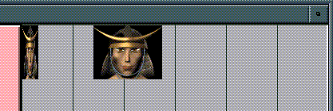
Figure 11.4 The same image with different bit-depths. Left, 4-bit; Right, 16-bit
Understanding TIM Files
The TIM format is the native image format for the Sony Playstation. You must convert your images to TIM format before you can use them on the playstation. TIM files are limited to 256 x 256 pixels in size. If you attempt to load a larger image than this, N-Paint will ask whether you wish to reduce it in size to 256x256. In addition, TIM files cannot be more than 16 bits in color depth.
TIM file names must also obey DOS file naming conventions: an eight character name with a three character extension (.TIM).
Understanding Image Tiles
Image tiles must be placed in VRAM according to two rules.
Figure 11.5 256x256, 16-bit map. Left, legal VRAM placement; right, illegal placement
Understanding CLUTs
TIM files are color-mapped images (except for 16-bit TIMs, which are full color). These color lookup tables are analogous to the palettes you create when you color-reduce an image. CLUTs must be stored in VRAM along with the images which use them.
- Note: 16-bit TIM files are full color images. Color values greater than 16-bits are truncated to their 16-bit equivalent when a larger (e.g. 32 or 64-bit) full color image is converted to TIM format.
Placing Image Tiles in VRAM
We're ready to place a few image tiles into the VRAM Canvas. Generally, you'll want to use color-reduced versions of images in the VRAM Editor, since TIM files are limited to 16 bits of color information per pixel. Full color images like RGB images contain 64 bits of color information. You can create color reduced versions of any full color image using N-Paint's Color Reduction tools.
We created the color reduced images in the last chapter, which we'll use in this tutorial. If you haven't created these images, you can use ones we created.
1. (CLICK-L) on File>Open.
- Load the files you created in the last chapter, or load our files:
/usr/local/ngc/demo/images/f-chest.lbm
/usr/local/ngc/demo/images/f-skirt.lbm
/usr/local/ngc/demo/images/f-helmet.lbm
Four things happen when you load images into the VRAM Editor:
Figure 11.6 VRAM Tile parameters
Figure 11.7 The three tiles loaded onto the VRAM Editor Canvas
Figure 11.8 Palettes (CLUTs) are stored in the VRAM area beneath the display buffers.
That's all there is to it! Assuming that your layout consists of only these three images, you're ready to save your layout and move on to the next one.
2. (CLICK-L) on the TIM Directory field.
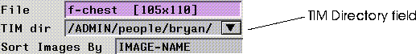
Figure 11.9 The TIM Directory field
- The layout directory is where the layout file and any generated TIM files are stored. Layout files are named like this:
-
vram.layout
- Specify a directory to be the TIM directory. Remember that a given directory can accommodate only a single layout!
3. Once you've specified a TIM directory, (CLICK-L) on File>Export All.
- A TIM file is created from each source file and saved to the TIM directory.
- Note: Because the location of a given image tile is embedded in the TIM file, there is rarely a reason to save an image to TIM format outside of the layout context.
4. (CLICK-L) on FIle>Save Layout.
- This saves the layout file to the TIM directory. Assuming your TIM directory was empty to begin with, the
ls command should reveal the following files:
./
../
f-chest.tim
f-helmet.tim
f-skirt.tim
vram.layout
Using the Best Fit Tools
In the last example we loaded only three small image tiles, so we were never threatened with running out of VRAM. Usually, though, you'll be trying to pack the maximum quantity of texture maps and imagery into VRAM. Obviously, optimizing the layout of a large number of tiles when VRAM is in short supply can be a frustrating and even futile puzzle.
Fortunately, N-Paint will do the placement for you, and also guarantee the largest number of tiles in a given layout are placed in VRAM.
For this example, we'll use a layout we created:
1. (CLICK-L) on the TIM dir field, and select the following directory.
/usr/local/ngc/demo/vram/
2. (CLICK-L) on File>Load Layout.
- This layout contains several tiles, purposely placed inefficiently in VRAM.
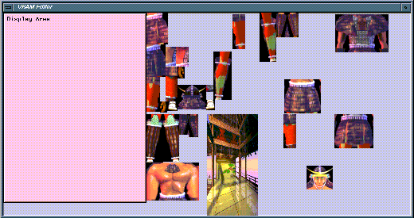
Figure 11.10 An inefficient VRAM layout
3. (CLICK-L) on Unplace.
- All the tiles are removed from VRAM.
- Unplacing the tiles allows you to start from scratch using the best fit tools.
4. (CLICK-L) on Place.
- All of the image tiles will be placed on the canvas. The best-fit algorithm will determine the ideal location for each tile.
- The result is a much more compact layout.
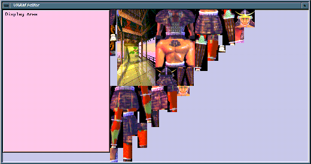
Figure 11.11 A more efficient VRAM layout
Saving a Layout
You may occasionally want to save a layout you've generated temporarily to memory before attempting to fine tune it. Saving a layout gives you the freedom to experiment without jeopardizing the work you've already done.
To save a VRAM layout to memory:
1. (CLICK-L) on Layout>Save.
- This saves the layout to memory only! No TIM files are written.
To restore a saved layout:
1. (CLICK-L) on Layout>Restore.
- The Restore button resets the VRAM Editor to its last saved configuration.
Sorting Images
By default, images appear in the VRAM Editor in the order in which they were loaded. You may occasionally wish to sort them in a different order.
To sort images in the VRAM menus:
1. (CLICK-L) on the Sort Images By field.
- The Sort Method pop-up menu appears:
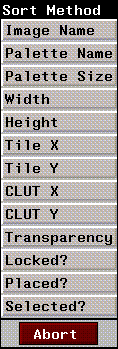
Figure 11.12 The Sort Method pop-up menu
- (CLICK-L) on a Sort Method to select it. The Sort Method options are described in detail in the N-Paint Reference Guide.
Changing Source Image Parameters
If space in VRAM is tight, and you're having trouble fitting the images you want to store in VRAM, you can change some of the image parameters to reduce their size and consequent VRAM requirements. You can also send source images to the Paint canvas, where you can modify them.
One technique is to use N-Paint's Color Reduction tool to reduce the bit-depth of an images palette.
To send an image to Color Reduction:
1. (CLICK-R) on the image in the VRAM Editor menu.
- The image operations pop-up menu appears:
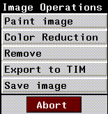
Figure 11.13 Image Operations pop-up menu
2. (CLICK-L) on Color Reduction.
- N-Paint enters color reduction mode, with the image you sent over selected as the current image.
- If the image has a palette associated with it, that palette becomes the current palette in Color Reduction.
3. (CLICK-L) on the Size field in the Color Reduction menus.
- A pop-up menu appears, listing your options for palette size (bit depth).
4. (CLICK-L) on a new value for bit depth.
- A smaller value will reduce the size of the palette, and consequently reduce the amount of VRAM consumed by the image.
5. (CLICK-L) Oper>Set Palette & Remap.
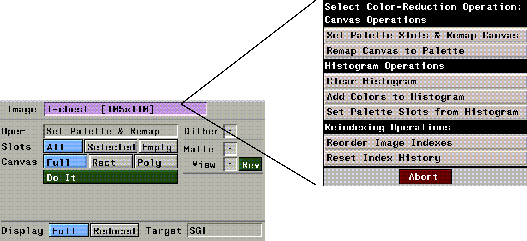
Figure 11.14 Selecting a Color Reduction operation
6. (CLICK-L) on Do It.
- This sets the slots in the now smaller palette to the color in the image, and remaps the image.
7. (CLICK-L) on Palette>Save.
- It's a good idea to save the palette.
8. (CLICK-L) on the VRam button in the N-Paint modes.
- You're back in VRAM mode. The image tile parameters should reflect the new, lower value for bit depth. Figure 11.15 shows the difference we achieved reducing a full color RGB image to a 16 bit palette.
Figure 11.15 Reduction in image size attained by color-reduction. Top, full-color image; Bottom, reduced, palettized image
Congratulations!
You're now qualified to load images into Sony Playstation VRAM! N-Paint's VRAM Editor transforms this complex task into a simple, intuitive process which you'll quickly master.
[N-World Contents] [Book Contents] [Prev] [Next] [Index]
 Another fine product from Nichimen documentation!
Another fine product from Nichimen documentation!
Copyright © 1996, Nichimen Graphics Corporation. All rights
reserved.